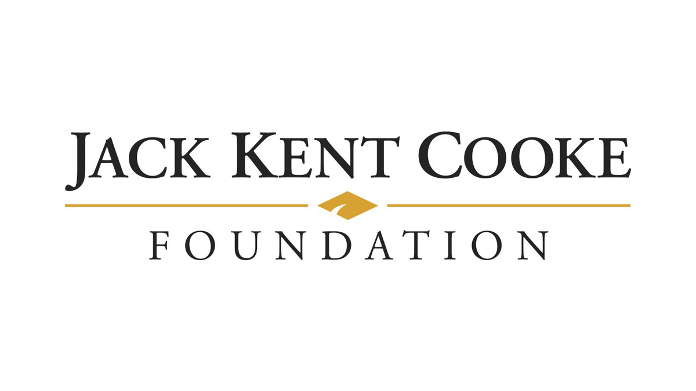
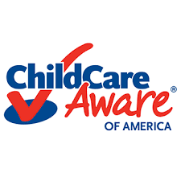
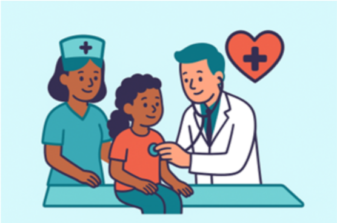
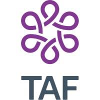
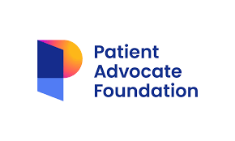
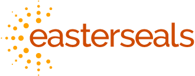
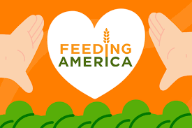
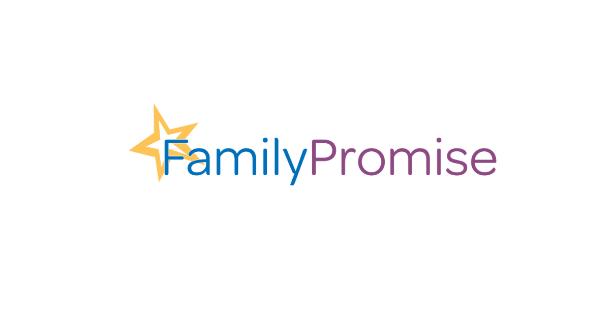
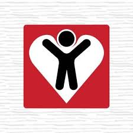
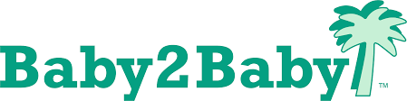

Our website connects individuals with nonprofit organizations to protect, heal, and empower children, helping every child grow up healthy, safe,
and full of hope. Hopefully, this site helps connect families with organizations that can provide funding or guidance for their situation.
Auidence:
Parents and guardians who are looking for nonprofits that can help
their children thrive.
Dynamic elements
Event listeners - so when the user clicks on the crescent
moon icon, the page goes into dark mode (possibly),
so that when the user enters information,
the search information shows up
Objects - all the information will be stored in objects
Arrays- tags will be stored in arrays because several non-profits
fall under various categories
forEach loop - helps me add the content to the page
Filter - helps decipher what information I want to show up on the page
Modal- if the user clicks on the information card, it should
open up in the modal with the current information
etc.
Branding
Website Logo
Style Guide
Primary:[#2c3e70]-Indigo
Secondary:[#f25f5c]-coral
Accent 1:[#6ec5e9]- sky blue
Typography
Heading Font: Bagel Fat One
Paragraph Font: Poppins
Navigation
Content
Home Page
Our Mission: At LittleLifelines, our goal is to provide
meaningful and accessible resources to families when they need
them most. We connect individuals with trusted nonprofit
organizations dedicated to supporting children’s health,
education, and safety. By bridging the gap between families in
need and those who can help, we support children’s health,
education, and safety- so every child has the opportunity to grow,
thrive, and experience a brighter future.
Make a difference: Your suggestion could help provide
opportunities and support for the children who need it most.
( Button - Enter suggestion here)
Discover our most popular programs: [ Health], [Safety], [Education]
Education Page


Growing Minds & Bright Futures: Education empowers children to
build the knowledge, confidence, and skills they need to grow &
thrive. We’ve provided trusted non-profits nationwide that are
dedicated to supporting every child’s learning journey.
Giraffe Laugh Early Learning Centers: Offers a tuition scholarship
for families that need temporary support or don’t qualify for Idaho’s state
support.
Head Start /Early Head Start: Offers free early education and other resources to low-income families
Big Brothers Big Sisters: Offers mentorship to children from the ages of 5 to 18. These individuals are paired with someone who is older than they are to foster meaningful relationships and inspiration
Child Mind Institute: Supports the education of children with mental health or learning disorders.
National Center for Learning Disabilities: Provides resources and scholarships for children with learning disabilities
Thornwell: Provides various resources, including educational support for families in SC
Jack Kent Cooke Foundation: Provides scholarships and academic support for high-achieving students with financial need
Khan Academy: Provides free online lessons, practice exercises, and tutoring for students of all ages
Child Care Aware of America: Helps families find affordable childcare and financial assistance programs
Scholarships.com: Helps families find scholarships and financial aid opportunities for students
Health Page




Healthy Kids, Happy Heart: Ensuring a child's health can be
expensive and overwhelming. That's why we've gathered trusted
non-profits across the nation that provide financial support,
medical care, and emotional guidance- because every child deserves
the chance to thrive.
United Healthcare Children’s Foundation: Provides medical grants
for expenses that are not covered by health insurance
Idaho Parents Unlimited: Helps families of children with special
needs get the support they need, from funding to training
Ronald McDonald House Charities: Assists families with housing
and meals as they support their ill child
Family Voices: Supports families with children who have special
needs through its various programs
Child Mind Institute: Supports children and teens facing mental
health issues through its various programs
Youth Empowerment Services: Assists Idaho children who have mental
health needs and a physical disability.
HealthWell Foundation: Helps families
cover out-of-pocket medical costs such as co-pays, premiums, and medications.
Patient Advocate Foundation: Provides financial aid and case management for
families dealing with serious illnesses
The Assistance Fund: Offers financial support for children with chronic or
life-threatening conditions
Easterseals: Provides services, therapy, and support for children with disabilities
Shriners Children’s: Offers specialized medical care for children regardless of ability to pay
Safety Page




Healthy Kids, Happy Heart: Ensuring a child's health can be
expensive and overwhelming. That's why we've gathered trusted
non-profits across the nation that provide financial support,
medical care, and emotional guidance- because every child deserves
the chance to thrive.
United Healthcare Children’s Foundation: Provides medical grants
for expenses that are not covered by health insurance
Idaho Parents Unlimited: Helps families of children with special
needs get the support they need, from funding to training
Ronald McDonald House Charities: Assists families with housing
and meals as they support their ill child
Family Voices: Supports families with children who have special
needs through its various programs
Child Mind Institute: Supports children and teens facing mental
health issues through its various programs
Youth Empowerment Services: Assists Idaho children who have mental
health needs and a physical disability. HealthWell Foundation: Helps families
cover out-of-pocket medical costs such as co-pays, premiums, and medications.
Patient Advocate Foundation: Provides financial aid and case management for
families dealing with serious illnesses
The Assistance Fund: Offers financial support for children with chronic or
life-threatening conditions
Easterseals: Provides services, therapy, and support for children with disabilities
Shriners Children’s: Offers specialized medical care for children regardless of ability to pay
Crisis Page
You are not alone. If you or someone you know is in crisis, help is available 24/7. These resources are confidential and free.
* If this is an emergency, please call 911 immediately*
* For immediate suicide prevention, please call or text 988*
Immediate Crisis Support:
Crisis Text Line: Text HOME to 741741, Free 24/7 crisis support via text
National Child Abuse Hotline: 1-800-422-4453, Childhelp National Abuse Hotline
National Runaway Safeline: Help for runaway and homeless youth
Nation Safe Place: Connect kids to safe locations(Libraries, fire stations, etc.)
Safety Planning:
If you need help now:
Call 911 if you or someone is in immediate danger
Reach out to a trusted adult - teacher, counselor, family member
Use one of the crisis hotlines listed above
Go to a safe place away from danger
Creating a Safety Plan:
Identify trusted adults you can contact
Know safe places you can go to in your community
Keep important phone numbers easily accessible
Have a plan for leaving dangerous situations quickly